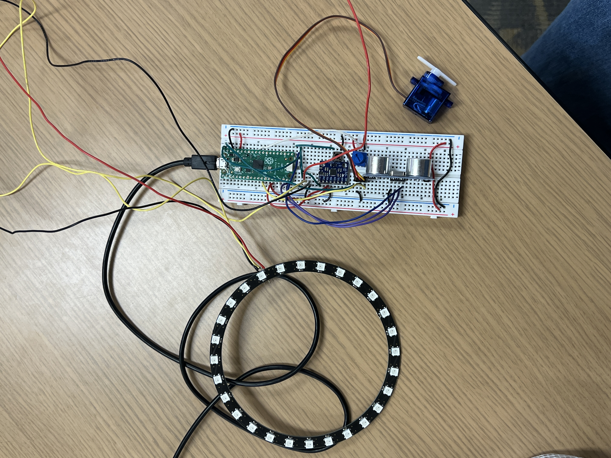
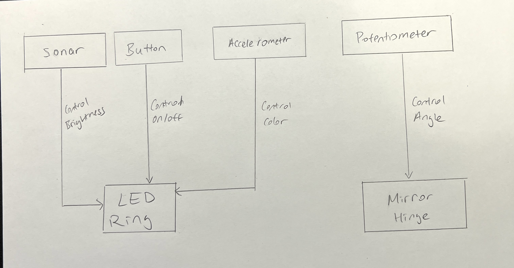
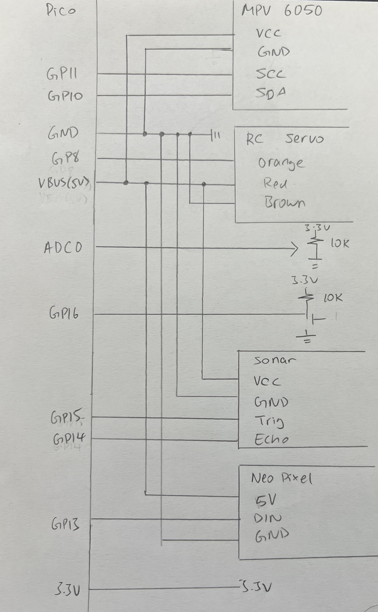
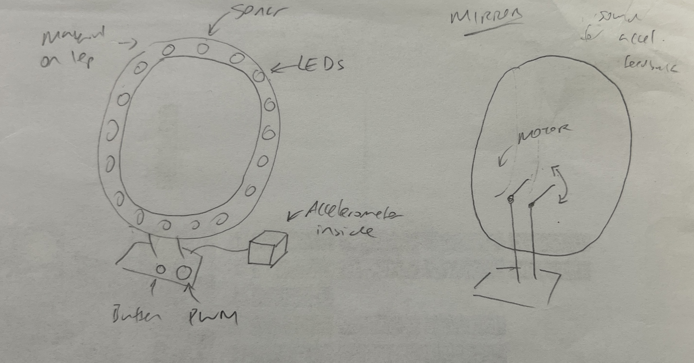
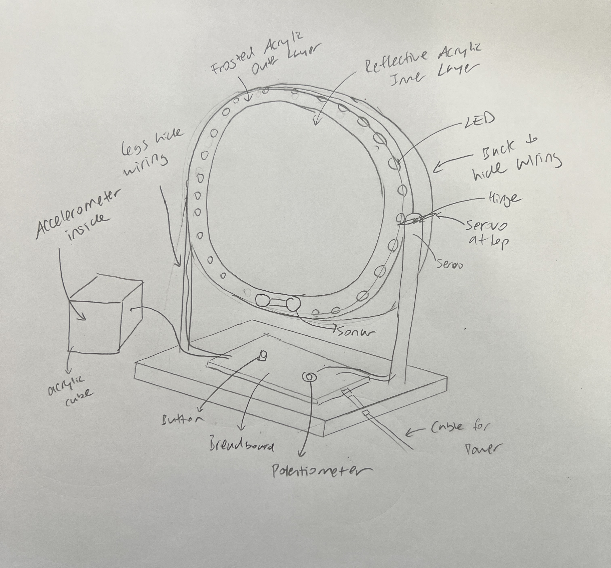

Project Journey
My project is a smart mirror that reacts to user input through various sensors. Users can primarily control the
This is the final demo video of the functionality of the smart mirror.
Link to final demo here.This is an image of the final setup and wiring.
This is a block diagram describing all interactions a user can have with the various components of the mirror.
This is a circuit Diagram of final wiring.
Full Code of final project.
import time
import board
import busio
import digitalio
import pwmio
from analogio import AnalogIn
import adafruit_hcsr04
from adafruit_motor import servo
import neopixel
import adafruit_mpu6050
# potentiometer
potentiometerpin = AnalogIn(board.A0)
# button
buttonpin = digitalio.DigitalInOut(board.GP16)
buttonpin.direction = digitalio.Direction.INPUT
buttonpin.pull = digitalio.Pull.UP
# sonar
sonar = adafruit_hcsr04.HCSR04(trigger_pin=board.GP15, echo_pin=board.GP14)
# servo
pwm = pwmio.PWMOut(board.GP9, duty_cycle = 0, frequency = 50)
servo = servo.Servo(pwm)
# accelerometer
i2c = busio.I2C(board.GP11, board.GP10) # the I2C pins used, (SCL, SDA)
mpu = adafruit_mpu6050.MPU6050(i2c)
mpu.accelerometer_range = adafruit_mpu6050.Range.RANGE_2_G
mpu.gyro_range = adafruit_mpu6050.GyroRange.RANGE_250_DPS
# neopixels
din_pin = board.GP13 # the pin connected to the neopixel DIN
num_pixels = 28 # how many neopixels in the strip
ORDER = neopixel.GRB
pixels = neopixel.NeoPixel(din_pin, num_pixels, brightness=0.1, auto_write=False,
pixel_order=ORDER)
pixels.fill((0, 0, 0))
pixels.show()
def translate_to_rgb(number):
return ((number + 16)/32)*255
times_pressed = 0
button = 1
old_button = 1
while 1:
button = buttonpin.value
# read PWM for servo
pot_value = potentiometerpin.value # range: 0 - 65535
servo.angle = int((180 / 65535) * pot_value)
if (button == 0 and old_button == 1):
if (times_pressed == 0):
print("On")
times_pressed = 1
elif (times_pressed == 1):
print("Off")
for i in range(28):
pixels[i] = (0, 0, 0)
pixels.show()
times_pressed = 0
if times_pressed == 1: # when on
# read sonar
try:
son_dist = sonar.distance
brightness = 1 - (son_dist / 40)
color = (translate_to_rgb(mpu.acceleration[0]) * brightness,
translate_to_rgb(mpu.acceleration[1]) * brightness,
translate_to_rgb(mpu.acceleration[2]) * brightness)
for i in range(28):
pixels[i] = color
pixels.show()
except RuntimeError:
print("Retrying!")
old_button = button
time.sleep(0.01)
This is an initial sketch of what I envisioned the mirror to look like initially.
This is the final sketch of what the smart mirror should look like.
